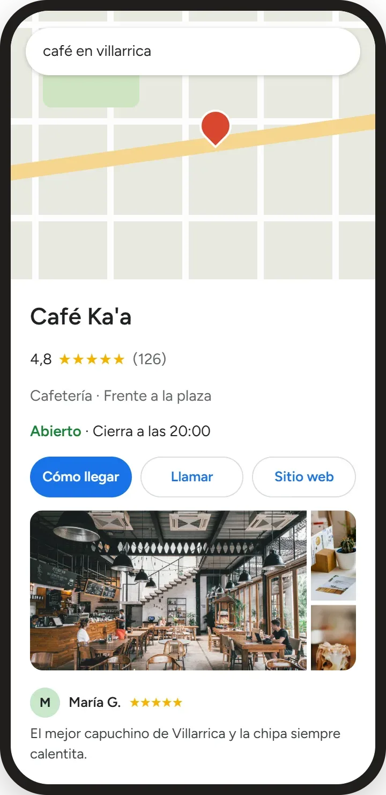

Servicio · Presencia profesional en Google
Que te encuentren cuando te buscan.
Cuando alguien escribe “café en Villarrica” en Google o en Google Maps, Café Ka'a aparece con fotos, horario, reseñas y tres botones: Cómo llegar, Llamar y Sitio web.
Es gratis para el negocio mantenerlo. Lo que cuesta es armarlo bien: categoría correcta, fotos que venden, horarios, servicios y una forma simple de pedir reseñas.

Simulación de cómo se ve el perfil en el celular.
Antes
- No aparecía en Google Maps, o con un punto sin fotos.
- Horario desactualizado: la gente llegaba y estaba cerrado.
- Sin reseñas: nadie sabía si era bueno.
- Para preguntar algo había que buscar el Instagram.
Después
- Aparece en “café en Villarrica” con 126 reseñas y 4,8 estrellas.
- Horario real, fotos del local y de los productos.
- Botones para llamar, llegar con GPS o entrar al sitio.
- Publicaciones con ofertas que se ven en la misma búsqueda.
En una semana, listo.
1
Crear o reclamar
Creo el perfil o recupero el que ya existe y lo verificamos a nombre del negocio.
2
Completar todo
Categorías, horarios, zona de servicio, productos o servicios con precio, y fotos.
3
Conectar
WhatsApp, sitio web e Instagram enlazados, para que el cliente elija cómo contactarte.
4
Reseñas
Un link y un QR para pedir reseñas a tus clientes, y cómo responderlas.